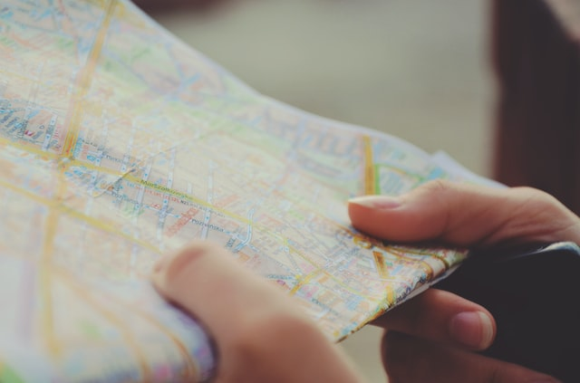

<ion-header [translucent]="true">
  <ion-toolbar>
    <ion-title>
      Mi ubicación
    </ion-title>
  </ion-toolbar>
</ion-header>

<ion-content [fullscreen]="true">
  <ion-header collapse="condense">
    <ion-toolbar>
      <ion-title size="large">Mi ubicación</ion-title>
    </ion-toolbar>
  </ion-header>

  <app-explore-container name="Tab 1 page"></app-explore-container>
  <ion-card>
    
    <ion-card-header>
      <ion-card-subtitle>Card Subtitle</ion-card-subtitle>
      <ion-card-title>Card Title</ion-card-title>
    </ion-card-header>
  
    <ion-card-content>
      Keep close to Nature's heart... and break clear away, once in awhile,
      and climb a mountain or spend a week in the woods. Wash your spirit clean.
    </ion-card-content>
  </ion-card>
</ion-content>
